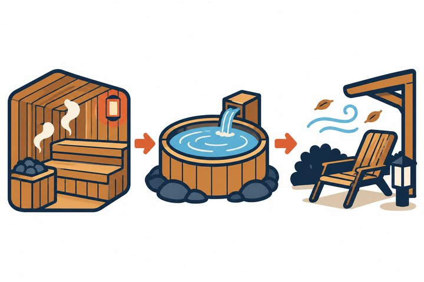

iPhone・iPad・Android のサウナの記録
次へを押すだけで、
段の時間を数える。
サウナ → 水風呂 → 外気浴 を、大きな［次へ］の1押しで進めながら、時間を数えて記録するアプリです。入浴中は、いまの段と経過時間が画面いっぱいに出ます。段が進むたびに保存するので、途中で閉じても消えません。
App Store・Google Play で配信予定買い切りで全部の機能が使えます。月額・アプリ内課金・広告・アカウントはありません。

こんな困りごとのために
ぬれた手で細かい操作はしたくない
入浴中に押すのは、画面の下の大きな［次へ］と、右上の［終える］だけ。いつも同じ場所・同じ大きさです。
途中で落ちて記録が消えた
段が進むたびに保存します。アプリを閉じても、開き直せば入浴中の画面に戻ります。
何分入ったか分からなくなる
時間は数え上げ。目安の時間（初めはサウナ 8 分・水風呂 1 分・外気浴 8 分）を超えたら、画面の色と言葉で知らせます。音や通知は出しません。
ととのった日の入り方を残したい
終えたら、周ごとの「ととのい」を5段階で。施設ごとに、平均の周回・1周あたりのサウナの時間・ととのいの平均が並びます。
カロリーの数字が信用できない
推定の消費カロリーや汗の量は出しません。出すのは測った時間と、iPhone ではヘルスケアにある心拍だけです。
施設の情報はいらない
施設は自分で名前を入れるだけ。検索や地図、口コミは持ちません。記録と振り返りに絞っています。
できること
| 入浴中 | いまの段（サウナ・水風呂・外気浴）と経過時間・周の数・前の段の時間。次の段は札で変えられます。サウナと水風呂の温度（℃／℉）も入れられます |
|---|---|
| 終えたら | 周ごとのととのい（1〜5）・メモ。iPhone は、Apple Watch などがヘルスケアに書いた心拍を、その入浴の時間だけ読んで段ごとの平均と最高を出します（読むだけ） |
| 記録 | カレンダーと一覧。1回の入浴で、段の時間と温度を直せます（あとの段も同じだけずれます）。ゴミ箱は30日 |
| 施設 | 回数・前回から何日・平均の周回・1周あたりのサウナ・ととのいの平均。名前を変える・並べかえ・しまう |
| グラフ | 月ごとの回数と、1周あたりのサウナの平均（同じ値を表でも） |
| 書き出し | CSV で書き出す・読みこむ（機種変更のときに） |
Android 版の 1.0 は、心拍の読みこみ（Health Connect）を持ちません。それ以外は同じです。
入浴について
あせとみずは、入った時間と自分でつけたととのいを記録するアプリです。健康についての助言はしません。体調がすぐれないとき、お酒を飲んだあとは、入浴を控えてください。